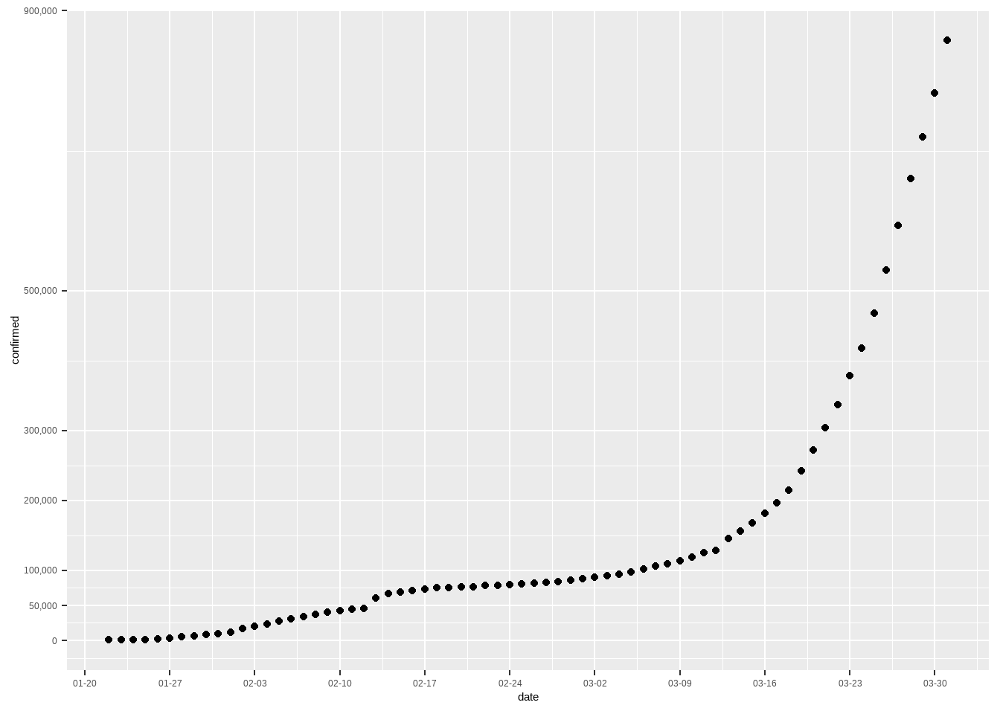
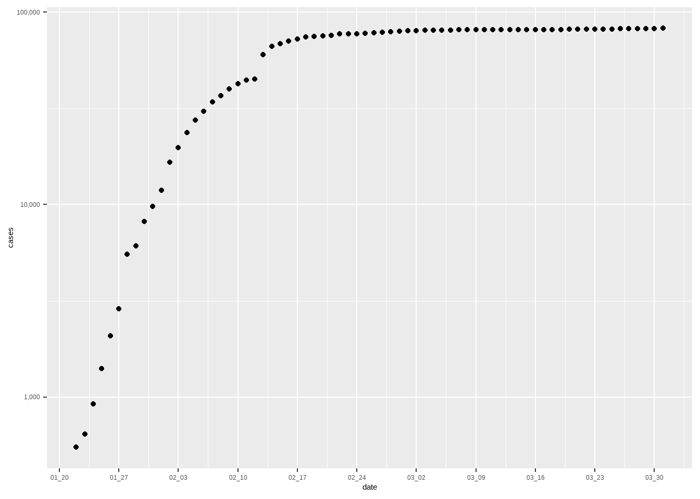
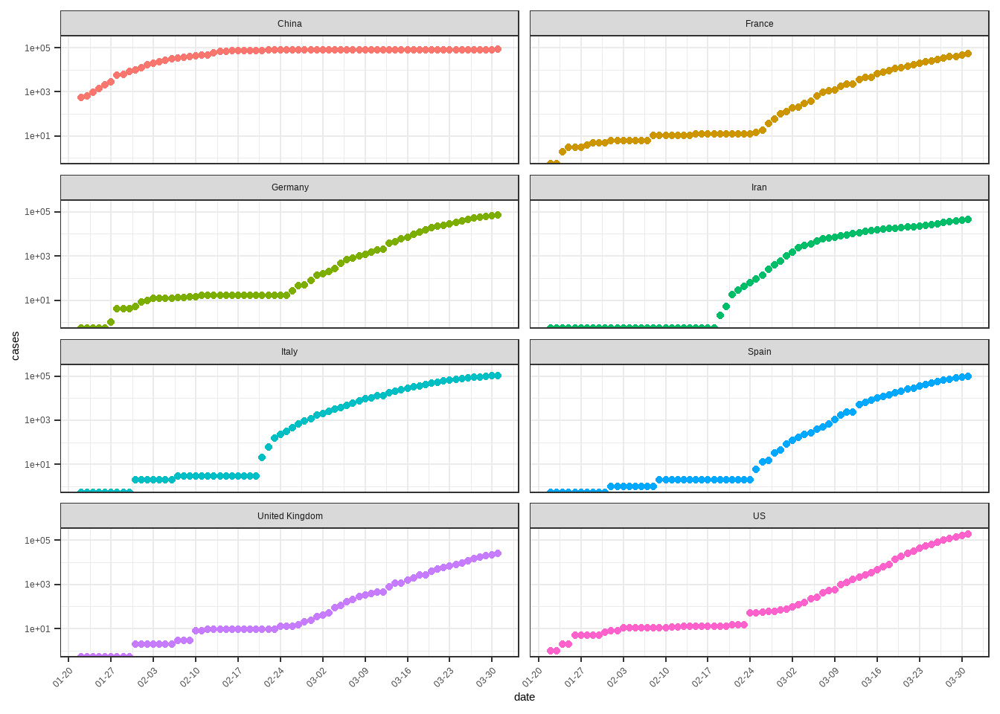
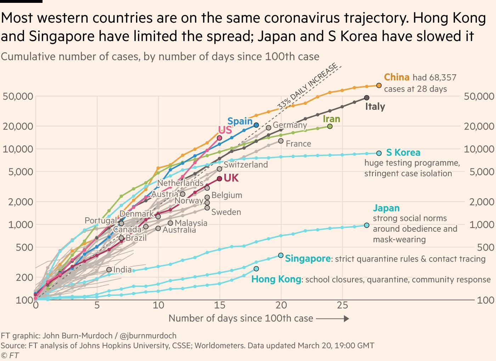

第 37 章 探索性数据分析-新冠疫情
新型冠状病毒（COVID-9）疫情在多国蔓延，本章尝试了解疫情发展，愿人类早日战胜病毒。
37.1 数据来源
数据来源于本连接，找到数据的时间序列（time_series）后，直接下载即可。
37.2 读取数据
在探索数据前，一定要对数据储存结构、数据变量名及其含义非常清楚，这样才能更好的进行探索分析。
# 读取数据
d <- read_csv("datas/time_series_covid19_confirmed_global.csv")
head(d)## # A tibble: 6 x 74
## `Province/State` `Country/Region` Lat Long `1/22/20` `1/23/20`
## <chr> <chr> <dbl> <dbl> <dbl> <dbl>
## 1 <NA> Afghanistan 33 65 0 0
## 2 <NA> Albania 41.2 20.2 0 0
## 3 <NA> Algeria 28.0 1.66 0 0
## 4 <NA> Andorra 42.5 1.52 0 0
## 5 <NA> Angola -11.2 17.9 0 0
## 6 <NA> Antigua and Barb~ 17.1 -61.8 0 0
## # ... with 68 more variables: `1/24/20` <dbl>, `1/25/20` <dbl>,
## # `1/26/20` <dbl>, `1/27/20` <dbl>, `1/28/20` <dbl>,
## # `1/29/20` <dbl>, `1/30/20` <dbl>, `1/31/20` <dbl>,
## # `2/1/20` <dbl>, `2/2/20` <dbl>, `2/3/20` <dbl>, `2/4/20` <dbl>,
## # `2/5/20` <dbl>, `2/6/20` <dbl>, `2/7/20` <dbl>, `2/8/20` <dbl>,
## # `2/9/20` <dbl>, `2/10/20` <dbl>, `2/11/20` <dbl>,
## # `2/12/20` <dbl>, `2/13/20` <dbl>, `2/14/20` <dbl>, ...# 查看数据基本结构
glimpse(d)## Rows: 256
## Columns: 74
## $ `Province/State` <chr> NA, NA, NA, NA, NA, NA, NA, NA, "Australia~
## $ `Country/Region` <chr> "Afghanistan", "Albania", "Algeria", "Ando~
## $ Lat <dbl> 33.0000, 41.1533, 28.0339, 42.5063, -11.20~
## $ Long <dbl> 65.0000, 20.1683, 1.6596, 1.5218, 17.8739,~
## $ `1/22/20` <dbl> 0, 0, 0, 0, 0, 0, 0, 0, 0, 0, 0, 0, 0, 0, ~
## $ `1/23/20` <dbl> 0, 0, 0, 0, 0, 0, 0, 0, 0, 0, 0, 0, 0, 0, ~
## $ `1/24/20` <dbl> 0, 0, 0, 0, 0, 0, 0, 0, 0, 0, 0, 0, 0, 0, ~
## $ `1/25/20` <dbl> 0, 0, 0, 0, 0, 0, 0, 0, 0, 0, 0, 0, 0, 0, ~
## $ `1/26/20` <dbl> 0, 0, 0, 0, 0, 0, 0, 0, 0, 3, 0, 0, 0, 0, ~
## $ `1/27/20` <dbl> 0, 0, 0, 0, 0, 0, 0, 0, 0, 4, 0, 0, 0, 0, ~
## $ `1/28/20` <dbl> 0, 0, 0, 0, 0, 0, 0, 0, 0, 4, 0, 0, 0, 0, ~
## $ `1/29/20` <dbl> 0, 0, 0, 0, 0, 0, 0, 0, 0, 4, 0, 1, 0, 0, ~
## $ `1/30/20` <dbl> 0, 0, 0, 0, 0, 0, 0, 0, 0, 4, 0, 3, 0, 0, ~
## $ `1/31/20` <dbl> 0, 0, 0, 0, 0, 0, 0, 0, 0, 4, 0, 2, 0, 0, ~
## $ `2/1/20` <dbl> 0, 0, 0, 0, 0, 0, 0, 0, 0, 4, 0, 3, 1, 0, ~
## $ `2/2/20` <dbl> 0, 0, 0, 0, 0, 0, 0, 0, 0, 4, 0, 2, 2, 0, ~
## $ `2/3/20` <dbl> 0, 0, 0, 0, 0, 0, 0, 0, 0, 4, 0, 2, 2, 0, ~
## $ `2/4/20` <dbl> 0, 0, 0, 0, 0, 0, 0, 0, 0, 4, 0, 3, 2, 0, ~
## $ `2/5/20` <dbl> 0, 0, 0, 0, 0, 0, 0, 0, 0, 4, 0, 3, 2, 0, ~
## $ `2/6/20` <dbl> 0, 0, 0, 0, 0, 0, 0, 0, 0, 4, 0, 4, 2, 0, ~
## $ `2/7/20` <dbl> 0, 0, 0, 0, 0, 0, 0, 0, 0, 4, 0, 5, 2, 0, ~
## $ `2/8/20` <dbl> 0, 0, 0, 0, 0, 0, 0, 0, 0, 4, 0, 5, 2, 0, ~
## $ `2/9/20` <dbl> 0, 0, 0, 0, 0, 0, 0, 0, 0, 4, 0, 5, 2, 0, ~
## $ `2/10/20` <dbl> 0, 0, 0, 0, 0, 0, 0, 0, 0, 4, 0, 5, 2, 0, ~
## $ `2/11/20` <dbl> 0, 0, 0, 0, 0, 0, 0, 0, 0, 4, 0, 5, 2, 0, ~
## $ `2/12/20` <dbl> 0, 0, 0, 0, 0, 0, 0, 0, 0, 4, 0, 5, 2, 0, ~
## $ `2/13/20` <dbl> 0, 0, 0, 0, 0, 0, 0, 0, 0, 4, 0, 5, 2, 0, ~
## $ `2/14/20` <dbl> 0, 0, 0, 0, 0, 0, 0, 0, 0, 4, 0, 5, 2, 0, ~
## $ `2/15/20` <dbl> 0, 0, 0, 0, 0, 0, 0, 0, 0, 4, 0, 5, 2, 0, ~
## $ `2/16/20` <dbl> 0, 0, 0, 0, 0, 0, 0, 0, 0, 4, 0, 5, 2, 0, ~
## $ `2/17/20` <dbl> 0, 0, 0, 0, 0, 0, 0, 0, 0, 4, 0, 5, 2, 0, ~
## $ `2/18/20` <dbl> 0, 0, 0, 0, 0, 0, 0, 0, 0, 4, 0, 5, 2, 0, ~
## $ `2/19/20` <dbl> 0, 0, 0, 0, 0, 0, 0, 0, 0, 4, 0, 5, 2, 0, ~
## $ `2/20/20` <dbl> 0, 0, 0, 0, 0, 0, 0, 0, 0, 4, 0, 5, 2, 0, ~
## $ `2/21/20` <dbl> 0, 0, 0, 0, 0, 0, 0, 0, 0, 4, 0, 5, 2, 0, ~
## $ `2/22/20` <dbl> 0, 0, 0, 0, 0, 0, 0, 0, 0, 4, 0, 5, 2, 0, ~
## $ `2/23/20` <dbl> 0, 0, 0, 0, 0, 0, 0, 0, 0, 4, 0, 5, 2, 0, ~
## $ `2/24/20` <dbl> 1, 0, 0, 0, 0, 0, 0, 0, 0, 4, 0, 5, 2, 0, ~
## $ `2/25/20` <dbl> 1, 0, 1, 0, 0, 0, 0, 0, 0, 4, 0, 5, 2, 0, ~
## $ `2/26/20` <dbl> 1, 0, 1, 0, 0, 0, 0, 0, 0, 4, 0, 5, 2, 0, ~
## $ `2/27/20` <dbl> 1, 0, 1, 0, 0, 0, 0, 0, 0, 4, 0, 5, 2, 0, ~
## $ `2/28/20` <dbl> 1, 0, 1, 0, 0, 0, 0, 0, 0, 4, 0, 5, 2, 0, ~
## $ `2/29/20` <dbl> 1, 0, 1, 0, 0, 0, 0, 0, 0, 4, 0, 9, 3, 0, ~
## $ `3/1/20` <dbl> 1, 0, 1, 0, 0, 0, 0, 1, 0, 6, 0, 9, 3, 0, ~
## $ `3/2/20` <dbl> 1, 0, 3, 1, 0, 0, 0, 1, 0, 6, 0, 9, 3, 1, ~
## $ `3/3/20` <dbl> 1, 0, 5, 1, 0, 0, 1, 1, 0, 13, 0, 11, 3, 1~
## $ `3/4/20` <dbl> 1, 0, 12, 1, 0, 0, 1, 1, 0, 22, 1, 11, 5, ~
## $ `3/5/20` <dbl> 1, 0, 12, 1, 0, 0, 1, 1, 0, 22, 1, 13, 5, ~
## $ `3/6/20` <dbl> 1, 0, 17, 1, 0, 0, 2, 1, 0, 26, 0, 13, 7, ~
## $ `3/7/20` <dbl> 1, 0, 17, 1, 0, 0, 8, 1, 0, 28, 0, 13, 7, ~
## $ `3/8/20` <dbl> 4, 0, 19, 1, 0, 0, 12, 1, 0, 38, 0, 15, 7,~
## $ `3/9/20` <dbl> 4, 2, 20, 1, 0, 0, 12, 1, 0, 48, 0, 15, 7,~
## $ `3/10/20` <dbl> 5, 10, 20, 1, 0, 0, 17, 1, 0, 55, 1, 18, 7~
## $ `3/11/20` <dbl> 7, 12, 20, 1, 0, 0, 19, 1, 0, 65, 1, 20, 9~
## $ `3/12/20` <dbl> 7, 23, 24, 1, 0, 0, 19, 4, 0, 65, 1, 20, 9~
## $ `3/13/20` <dbl> 7, 33, 26, 1, 0, 1, 31, 8, 1, 92, 1, 35, 1~
## $ `3/14/20` <dbl> 11, 38, 37, 1, 0, 1, 34, 18, 1, 112, 1, 46~
## $ `3/15/20` <dbl> 16, 42, 48, 1, 0, 1, 45, 26, 1, 134, 1, 61~
## $ `3/16/20` <dbl> 21, 51, 54, 2, 0, 1, 56, 52, 2, 171, 1, 68~
## $ `3/17/20` <dbl> 22, 55, 60, 39, 0, 1, 68, 78, 2, 210, 1, 7~
## $ `3/18/20` <dbl> 22, 59, 74, 39, 0, 1, 79, 84, 3, 267, 1, 9~
## $ `3/19/20` <dbl> 22, 64, 87, 53, 0, 1, 97, 115, 4, 307, 1, ~
## $ `3/20/20` <dbl> 24, 70, 90, 75, 1, 1, 128, 136, 6, 353, 3,~
## $ `3/21/20` <dbl> 24, 76, 139, 88, 2, 1, 158, 160, 9, 436, 3~
## $ `3/22/20` <dbl> 40, 89, 201, 113, 2, 1, 266, 194, 19, 669,~
## $ `3/23/20` <dbl> 40, 104, 230, 133, 3, 3, 301, 235, 32, 669~
## $ `3/24/20` <dbl> 74, 123, 264, 164, 3, 3, 387, 249, 39, 818~
## $ `3/25/20` <dbl> 84, 146, 302, 188, 3, 3, 387, 265, 39, 102~
## $ `3/26/20` <dbl> 94, 174, 367, 224, 4, 7, 502, 290, 53, 121~
## $ `3/27/20` <dbl> 110, 186, 409, 267, 4, 7, 589, 329, 62, 14~
## $ `3/28/20` <dbl> 110, 197, 454, 308, 5, 7, 690, 407, 71, 16~
## $ `3/29/20` <dbl> 120, 212, 511, 334, 7, 7, 745, 424, 77, 17~
## $ `3/30/20` <dbl> 170, 223, 584, 370, 7, 7, 820, 482, 78, 20~
## $ `3/31/20` <dbl> 174, 243, 716, 376, 7, 7, 1054, 532, 80, 2~37.3 数据清洗规整
d_country <- d %>%
pivot_longer(
cols = -c(1:4),
names_to = "date",
values_to = "cases"
) %>%
mutate(date = lubridate::mdy(date)) %>%
janitor::clean_names() %>%
group_by(country_region, date) %>%
summarise(cases = sum(cases)) %>%
ungroup()## Warning in FUN(X[[i]], ...): strings not representable in native
## encoding will be translated to UTF-8## Warning in FUN(X[[i]], ...): unable to translate '<U+00C4>' to native
## encoding## Warning in FUN(X[[i]], ...): unable to translate '<U+00D6>' to native
## encoding## Warning in FUN(X[[i]], ...): unable to translate '<U+00E4>' to native
## encoding## Warning in FUN(X[[i]], ...): unable to translate '<U+00F6>' to native
## encoding## Warning in FUN(X[[i]], ...): unable to translate '<U+00DF>' to native
## encoding## Warning in FUN(X[[i]], ...): unable to translate '<U+00C6>' to native
## encoding## Warning in FUN(X[[i]], ...): unable to translate '<U+00E6>' to native
## encoding## Warning in FUN(X[[i]], ...): unable to translate '<U+00D8>' to native
## encoding## Warning in FUN(X[[i]], ...): unable to translate '<U+00F8>' to native
## encoding## Warning in FUN(X[[i]], ...): unable to translate '<U+00C5>' to native
## encoding## Warning in FUN(X[[i]], ...): unable to translate '<U+00E5>' to native
## encodingd_country## # A tibble: 12,600 x 3
## country_region date cases
## <chr> <date> <dbl>
## 1 Afghanistan 2020-01-22 0
## 2 Afghanistan 2020-01-23 0
## 3 Afghanistan 2020-01-24 0
## 4 Afghanistan 2020-01-25 0
## 5 Afghanistan 2020-01-26 0
## 6 Afghanistan 2020-01-27 0
## 7 Afghanistan 2020-01-28 0
## 8 Afghanistan 2020-01-29 0
## 9 Afghanistan 2020-01-30 0
## 10 Afghanistan 2020-01-31 0
## # ... with 12,590 more rowsd_date <- d_country %>%
group_by(date) %>%
summarise(confirmed = sum(cases))
d_date %>%
ggplot(aes(x = date, y = confirmed)) +
geom_point() +
scale_x_date(
date_labels = "%m-%d",
date_breaks = "1 week"
) +
scale_y_continuous(
breaks = c(0, 50000, 100000, 200000, 300000,
500000, 900000),
labels = scales::comma
)

图 37.1: 2020年1月至2020年3月新冠肺炎累积确诊病例
theme_bw() +
labs(x = " ", y = "累积确诊病例")## List of 95
## $ line :List of 6
## ..$ colour : chr "black"
## ..$ size : num 0.5
## ..$ linetype : num 1
## ..$ lineend : chr "butt"
## ..$ arrow : logi FALSE
## ..$ inherit.blank: logi TRUE
## ..- attr(*, "class")= chr [1:2] "element_line" "element"
## $ rect :List of 5
## ..$ fill : chr "white"
## ..$ colour : chr "black"
## ..$ size : num 0.5
## ..$ linetype : num 1
## ..$ inherit.blank: logi TRUE
## ..- attr(*, "class")= chr [1:2] "element_rect" "element"
## $ text :List of 11
## ..$ family : chr ""
## ..$ face : chr "plain"
## ..$ colour : chr "black"
## ..$ size : num 11
## ..$ hjust : num 0.5
## ..$ vjust : num 0.5
## ..$ angle : num 0
## ..$ lineheight : num 0.9
## ..$ margin : 'margin' num [1:4] 0points 0points 0points 0po..
## .. ..- attr(*, "unit")= int 8
## ..$ debug : logi FALSE
## ..$ inherit.blank: logi TRUE
## ..- attr(*, "class")= chr [1:2] "element_text" "element"
## $ title : NULL
## $ aspect.ratio : NULL
## $ axis.title : NULL
## $ axis.title.x :List of 11
## ..$ family : NULL
## ..$ face : NULL
## ..$ colour : NULL
## ..$ size : NULL
## ..$ hjust : NULL
## ..$ vjust : num 1
## ..$ angle : NULL
## ..$ lineheight : NULL
## ..$ margin : 'margin' num [1:4] 2.75points 0points 0points ..
## .. ..- attr(*, "unit")= int 8
## ..$ debug : NULL
## ..$ inherit.blank: logi TRUE
## ..- attr(*, "class")= chr [1:2] "element_text" "element"
## $ axis.title.x.top :List of 11
## ..$ family : NULL
## ..$ face : NULL
## ..$ colour : NULL
## ..$ size : NULL
## ..$ hjust : NULL
## ..$ vjust : num 0
## ..$ angle : NULL
## ..$ lineheight : NULL
## ..$ margin : 'margin' num [1:4] 0points 0points 2.75points ..
## .. ..- attr(*, "unit")= int 8
## ..$ debug : NULL
## ..$ inherit.blank: logi TRUE
## ..- attr(*, "class")= chr [1:2] "element_text" "element"
## $ axis.title.x.bottom : NULL
## $ axis.title.y :List of 11
## ..$ family : NULL
## ..$ face : NULL
## ..$ colour : NULL
## ..$ size : NULL
## ..$ hjust : NULL
## ..$ vjust : num 1
## ..$ angle : num 90
## ..$ lineheight : NULL
## ..$ margin : 'margin' num [1:4] 0points 2.75points 0points ..
## .. ..- attr(*, "unit")= int 8
## ..$ debug : NULL
## ..$ inherit.blank: logi TRUE
## ..- attr(*, "class")= chr [1:2] "element_text" "element"
## $ axis.title.y.left : NULL
## $ axis.title.y.right :List of 11
## ..$ family : NULL
## ..$ face : NULL
## ..$ colour : NULL
## ..$ size : NULL
## ..$ hjust : NULL
## ..$ vjust : num 0
## ..$ angle : num -90
## ..$ lineheight : NULL
## ..$ margin : 'margin' num [1:4] 0points 0points 0points 2.7..
## .. ..- attr(*, "unit")= int 8
## ..$ debug : NULL
## ..$ inherit.blank: logi TRUE
## ..- attr(*, "class")= chr [1:2] "element_text" "element"
## $ axis.text :List of 11
## ..$ family : NULL
## ..$ face : NULL
## ..$ colour : chr "grey30"
## ..$ size : 'rel' num 0.8
## ..$ hjust : NULL
## ..$ vjust : NULL
## ..$ angle : NULL
## ..$ lineheight : NULL
## ..$ margin : NULL
## ..$ debug : NULL
## ..$ inherit.blank: logi TRUE
## ..- attr(*, "class")= chr [1:2] "element_text" "element"
## $ axis.text.x :List of 11
## ..$ family : NULL
## ..$ face : NULL
## ..$ colour : NULL
## ..$ size : NULL
## ..$ hjust : NULL
## ..$ vjust : num 1
## ..$ angle : NULL
## ..$ lineheight : NULL
## ..$ margin : 'margin' num [1:4] 2.2points 0points 0points 0..
## .. ..- attr(*, "unit")= int 8
## ..$ debug : NULL
## ..$ inherit.blank: logi TRUE
## ..- attr(*, "class")= chr [1:2] "element_text" "element"
## $ axis.text.x.top :List of 11
## ..$ family : NULL
## ..$ face : NULL
## ..$ colour : NULL
## ..$ size : NULL
## ..$ hjust : NULL
## ..$ vjust : num 0
## ..$ angle : NULL
## ..$ lineheight : NULL
## ..$ margin : 'margin' num [1:4] 0points 0points 2.2points 0..
## .. ..- attr(*, "unit")= int 8
## ..$ debug : NULL
## ..$ inherit.blank: logi TRUE
## ..- attr(*, "class")= chr [1:2] "element_text" "element"
## $ axis.text.x.bottom : NULL
## $ axis.text.y :List of 11
## ..$ family : NULL
## ..$ face : NULL
## ..$ colour : NULL
## ..$ size : NULL
## ..$ hjust : num 1
## ..$ vjust : NULL
## ..$ angle : NULL
## ..$ lineheight : NULL
## ..$ margin : 'margin' num [1:4] 0points 2.2points 0points 0..
## .. ..- attr(*, "unit")= int 8
## ..$ debug : NULL
## ..$ inherit.blank: logi TRUE
## ..- attr(*, "class")= chr [1:2] "element_text" "element"
## $ axis.text.y.left : NULL
## $ axis.text.y.right :List of 11
## ..$ family : NULL
## ..$ face : NULL
## ..$ colour : NULL
## ..$ size : NULL
## ..$ hjust : num 0
## ..$ vjust : NULL
## ..$ angle : NULL
## ..$ lineheight : NULL
## ..$ margin : 'margin' num [1:4] 0points 0points 0points 2.2..
## .. ..- attr(*, "unit")= int 8
## ..$ debug : NULL
## ..$ inherit.blank: logi TRUE
## ..- attr(*, "class")= chr [1:2] "element_text" "element"
## $ axis.ticks :List of 6
## ..$ colour : chr "grey20"
## ..$ size : NULL
## ..$ linetype : NULL
## ..$ lineend : NULL
## ..$ arrow : logi FALSE
## ..$ inherit.blank: logi TRUE
## ..- attr(*, "class")= chr [1:2] "element_line" "element"
## $ axis.ticks.x : NULL
## $ axis.ticks.x.top : NULL
## $ axis.ticks.x.bottom : NULL
## $ axis.ticks.y : NULL
## $ axis.ticks.y.left : NULL
## $ axis.ticks.y.right : NULL
## $ axis.ticks.length : 'simpleUnit' num 2.75points
## ..- attr(*, "unit")= int 8
## $ axis.ticks.length.x : NULL
## $ axis.ticks.length.x.top : NULL
## $ axis.ticks.length.x.bottom: NULL
## $ axis.ticks.length.y : NULL
## $ axis.ticks.length.y.left : NULL
## $ axis.ticks.length.y.right : NULL
## $ axis.line : list()
## ..- attr(*, "class")= chr [1:2] "element_blank" "element"
## $ axis.line.x : NULL
## $ axis.line.x.top : NULL
## $ axis.line.x.bottom : NULL
## $ axis.line.y : NULL
## $ axis.line.y.left : NULL
## $ axis.line.y.right : NULL
## $ legend.background :List of 5
## ..$ fill : NULL
## ..$ colour : logi NA
## ..$ size : NULL
## ..$ linetype : NULL
## ..$ inherit.blank: logi TRUE
## ..- attr(*, "class")= chr [1:2] "element_rect" "element"
## $ legend.margin : 'margin' num [1:4] 5.5points 5.5poin..
## ..- attr(*, "unit")= int 8
## $ legend.spacing : 'simpleUnit' num 11points
## ..- attr(*, "unit")= int 8
## $ legend.spacing.x : NULL
## $ legend.spacing.y : NULL
## $ legend.key :List of 5
## ..$ fill : chr "white"
## ..$ colour : logi NA
## ..$ size : NULL
## ..$ linetype : NULL
## ..$ inherit.blank: logi TRUE
## ..- attr(*, "class")= chr [1:2] "element_rect" "element"
## $ legend.key.size : 'simpleUnit' num 1.2lines
## ..- attr(*, "unit")= int 3
## $ legend.key.height : NULL
## $ legend.key.width : NULL
## $ legend.text :List of 11
## ..$ family : NULL
## ..$ face : NULL
## ..$ colour : NULL
## ..$ size : 'rel' num 0.8
## ..$ hjust : NULL
## ..$ vjust : NULL
## ..$ angle : NULL
## ..$ lineheight : NULL
## ..$ margin : NULL
## ..$ debug : NULL
## ..$ inherit.blank: logi TRUE
## ..- attr(*, "class")= chr [1:2] "element_text" "element"
## $ legend.text.align : NULL
## $ legend.title :List of 11
## ..$ family : NULL
## ..$ face : NULL
## ..$ colour : NULL
## ..$ size : NULL
## ..$ hjust : num 0
## ..$ vjust : NULL
## ..$ angle : NULL
## ..$ lineheight : NULL
## ..$ margin : NULL
## ..$ debug : NULL
## ..$ inherit.blank: logi TRUE
## ..- attr(*, "class")= chr [1:2] "element_text" "element"
## $ legend.title.align : NULL
## $ legend.position : chr "right"
## $ legend.direction : NULL
## $ legend.justification : chr "center"
## $ legend.box : NULL
## $ legend.box.just : NULL
## $ legend.box.margin : 'margin' num [1:4] 0cm 0cm 0cm 0cm
## ..- attr(*, "unit")= int 1
## $ legend.box.background : list()
## ..- attr(*, "class")= chr [1:2] "element_blank" "element"
## $ legend.box.spacing : 'simpleUnit' num 11points
## ..- attr(*, "unit")= int 8
## $ panel.background :List of 5
## ..$ fill : chr "white"
## ..$ colour : logi NA
## ..$ size : NULL
## ..$ linetype : NULL
## ..$ inherit.blank: logi TRUE
## ..- attr(*, "class")= chr [1:2] "element_rect" "element"
## $ panel.border :List of 5
## ..$ fill : logi NA
## ..$ colour : chr "grey20"
## ..$ size : NULL
## ..$ linetype : NULL
## ..$ inherit.blank: logi TRUE
## ..- attr(*, "class")= chr [1:2] "element_rect" "element"
## $ panel.spacing : 'simpleUnit' num 5.5points
## ..- attr(*, "unit")= int 8
## $ panel.spacing.x : NULL
## $ panel.spacing.y : NULL
## $ panel.grid :List of 6
## ..$ colour : chr "grey92"
## ..$ size : NULL
## ..$ linetype : NULL
## ..$ lineend : NULL
## ..$ arrow : logi FALSE
## ..$ inherit.blank: logi TRUE
## ..- attr(*, "class")= chr [1:2] "element_line" "element"
## $ panel.grid.major : NULL
## $ panel.grid.minor :List of 6
## ..$ colour : NULL
## ..$ size : 'rel' num 0.5
## ..$ linetype : NULL
## ..$ lineend : NULL
## ..$ arrow : logi FALSE
## ..$ inherit.blank: logi TRUE
## ..- attr(*, "class")= chr [1:2] "element_line" "element"
## $ panel.grid.major.x : NULL
## $ panel.grid.major.y : NULL
## $ panel.grid.minor.x : NULL
## $ panel.grid.minor.y : NULL
## $ panel.ontop : logi FALSE
## $ plot.background :List of 5
## ..$ fill : NULL
## ..$ colour : chr "white"
## ..$ size : NULL
## ..$ linetype : NULL
## ..$ inherit.blank: logi TRUE
## ..- attr(*, "class")= chr [1:2] "element_rect" "element"
## $ plot.title :List of 11
## ..$ family : NULL
## ..$ face : NULL
## ..$ colour : NULL
## ..$ size : 'rel' num 1.2
## ..$ hjust : num 0
## ..$ vjust : num 1
## ..$ angle : NULL
## ..$ lineheight : NULL
## ..$ margin : 'margin' num [1:4] 0points 0points 5.5points 0..
## .. ..- attr(*, "unit")= int 8
## ..$ debug : NULL
## ..$ inherit.blank: logi TRUE
## ..- attr(*, "class")= chr [1:2] "element_text" "element"
## $ plot.title.position : chr "panel"
## $ plot.subtitle :List of 11
## ..$ family : NULL
## ..$ face : NULL
## ..$ colour : NULL
## ..$ size : NULL
## ..$ hjust : num 0
## ..$ vjust : num 1
## ..$ angle : NULL
## ..$ lineheight : NULL
## ..$ margin : 'margin' num [1:4] 0points 0points 5.5points 0..
## .. ..- attr(*, "unit")= int 8
## ..$ debug : NULL
## ..$ inherit.blank: logi TRUE
## ..- attr(*, "class")= chr [1:2] "element_text" "element"
## $ plot.caption :List of 11
## ..$ family : NULL
## ..$ face : NULL
## ..$ colour : NULL
## ..$ size : 'rel' num 0.8
## ..$ hjust : num 1
## ..$ vjust : num 1
## ..$ angle : NULL
## ..$ lineheight : NULL
## ..$ margin : 'margin' num [1:4] 5.5points 0points 0points 0..
## .. ..- attr(*, "unit")= int 8
## ..$ debug : NULL
## ..$ inherit.blank: logi TRUE
## ..- attr(*, "class")= chr [1:2] "element_text" "element"
## $ plot.caption.position : chr "panel"
## $ plot.tag :List of 11
## ..$ family : NULL
## ..$ face : NULL
## ..$ colour : NULL
## ..$ size : 'rel' num 1.2
## ..$ hjust : num 0.5
## ..$ vjust : num 0.5
## ..$ angle : NULL
## ..$ lineheight : NULL
## ..$ margin : NULL
## ..$ debug : NULL
## ..$ inherit.blank: logi TRUE
## ..- attr(*, "class")= chr [1:2] "element_text" "element"
## $ plot.tag.position : chr "topleft"
## $ plot.margin : 'margin' num [1:4] 5.5points 5.5poin..
## ..- attr(*, "unit")= int 8
## $ strip.background :List of 5
## ..$ fill : chr "grey85"
## ..$ colour : chr "grey20"
## ..$ size : NULL
## ..$ linetype : NULL
## ..$ inherit.blank: logi TRUE
## ..- attr(*, "class")= chr [1:2] "element_rect" "element"
## $ strip.background.x : NULL
## $ strip.background.y : NULL
## $ strip.placement : chr "inside"
## $ strip.text :List of 11
## ..$ family : NULL
## ..$ face : NULL
## ..$ colour : chr "grey10"
## ..$ size : 'rel' num 0.8
## ..$ hjust : NULL
## ..$ vjust : NULL
## ..$ angle : NULL
## ..$ lineheight : NULL
## ..$ margin : 'margin' num [1:4] 4.4points 4.4points 4.4poin..
## .. ..- attr(*, "unit")= int 8
## ..$ debug : NULL
## ..$ inherit.blank: logi TRUE
## ..- attr(*, "class")= chr [1:2] "element_text" "element"
## $ strip.text.x : NULL
## $ strip.text.y :List of 11
## ..$ family : NULL
## ..$ face : NULL
## ..$ colour : NULL
## ..$ size : NULL
## ..$ hjust : NULL
## ..$ vjust : NULL
## ..$ angle : num -90
## ..$ lineheight : NULL
## ..$ margin : NULL
## ..$ debug : NULL
## ..$ inherit.blank: logi TRUE
## ..- attr(*, "class")= chr [1:2] "element_text" "element"
## $ strip.switch.pad.grid : 'simpleUnit' num 2.75points
## ..- attr(*, "unit")= int 8
## $ strip.switch.pad.wrap : 'simpleUnit' num 2.75points
## ..- attr(*, "unit")= int 8
## $ strip.text.y.left :List of 11
## ..$ family : NULL
## ..$ face : NULL
## ..$ colour : NULL
## ..$ size : NULL
## ..$ hjust : NULL
## ..$ vjust : NULL
## ..$ angle : num 90
## ..$ lineheight : NULL
## ..$ margin : NULL
## ..$ debug : NULL
## ..$ inherit.blank: logi TRUE
## ..- attr(*, "class")= chr [1:2] "element_text" "element"
## $ x : chr " "
## $ y : chr "累积确诊病例"
## - attr(*, "class")= chr [1:2] "theme" "gg"
## - attr(*, "complete")= logi TRUE
## - attr(*, "validate")= logi TRUE由上图可知每日确诊病例在3月中旬有一个急速的增长。
根据WHO的报告，新冠肺炎从首例病例报告到感染者达到10万人用了67天；感染人数增至20万用了11天；从20万到突破30万则只用了4天。
那么我国疫情的情况如何呢？
d_china <- d_country %>%
filter(country_region == "China")
d_china %>%
filter(country_region == "China") %>%
ggplot(aes(x = date, y = cases)) +
geom_point() +
scale_x_date(date_breaks = "1 week",
date_labels = "%m_%d") +
scale_y_log10(labels = scales::comma)
从上图可以看出，在2020年1月至2月中旬期间我国确诊病例急速增加，在2020年2月中旬后，每日新增的确诊病例已经很少，反映出我国的疫情防控措施卓有成效。
d_country %>%
group_by(country_region) %>%
filter(max(cases) >= 20000) %>%
ungroup() %>%
ggplot(aes(x = date, y = cases, color = country_region)) +
geom_point() +
scale_x_date(date_breaks = "1 week",
date_labels = "%m-%d") +
scale_y_log10() +
facet_wrap(vars(country_region), ncol = 2) +
theme_bw() +
theme(axis.text.x = element_text(angle = 45,
hjust = 1)) +
theme(legend.position = "none")## Warning: Transformation introduced infinite values in continuous y-
## axis
由上图可以看出，除我国外，其它欧美主要国家的病例均在持续大幅增长。
37.4 可视化探索
该网站 这张图很受关注，我们是否可以在R中将其重现？
knitr::include_graphics("images/ft_coronavirus.jpg",
dpi = FALSE)

图 37.2: 图片来源www.ft.com
这张图表达出的几个信息：
出现100个病例后，各国确认人数的爆发趋势。
横坐标为累积天数，即出现100个病例后的第几天。
纵坐标为累积确诊病例数。
那么要画出这个图形，我们需要对数据的时间轴做出相应的变形：
首先需要按照国家进行分组。
筛选累积病例数超过100的国家。
找到所有cases>=100的日期，并确定第0天（最早的日期）
构建新列，对应“出现第100个病例后的第几天”:
- mutate(days_since_100 = date - min(date[cases >= 100]))
- 将新列从日期型转化为数值型。